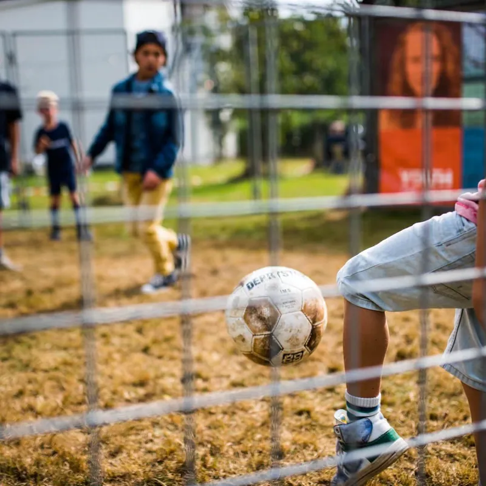
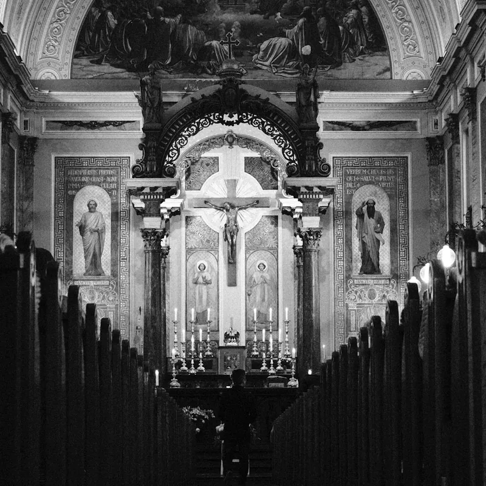

[ Branding ]
IkBenMedia is de ontwerpstudio van Ischa Biesbrouck. Logo, huisstijl, website, sociale media, drukwerk en videografie — slim, visueel krachtig en met volledige aandacht gemaakt.
Een greep uit recente opdrachten en concepten — van merkidentiteit tot productontwerp.
Alles wat een merk nodig heeft om gezien en onthouden te worden — uit één hand, in één lijn.
Een logo is het kortste verhaal dat een merk vertelt. Vanuit uw waarden, doelgroep en ambitie ontwikkel ik een teken dat klopt in elk formaat — van favicon tot gevelbord.
Kleur, typografie, beeldtaal en grid samengebracht in een helder systeem, zodat elke uiting — van visitekaartje tot presentatie — als vanzelf bij elkaar hoort.
Snelle, toegankelijke websites die op elk scherm overeind blijven. Ontwerp en bouw uit één hand, met aandacht voor structuur, leesbaarheid en vindbaarheid.
Templates, opmaak en contentstructuur waarmee u zelf consequent en herkenbaar kunt blijven posten — of laat het ontwerp volledig aan mij over.
Visitekaartjes, flyers, posters, brochures en verpakkingen — drukklaar aangeleverd, met oog voor papier, afwerking en kleurvastheid.
Videografie en beeldproductie, advies en consultatie over uw merk of marketing, onderhoud van bestaand werk en trainingen om zelf verder te kunnen.
Een kort gesprek over uw doel, publiek en planning. Helder en zonder verplichtingen.
Onderzoek en schetsen vormen een duidelijke richting, onderbouwd en goed uitgelegd.
Uitwerking en verfijning in korte rondes, met directe lijnen en snelle feedback.
Alle bestanden netjes aangeleverd, plus nazorg en onderhoud wanneer u dat wilt.
Wie ben ik?
ontwerper & oprichter,
ikbenmedia
Zolang ik me kan heugen vind ik rust en voldoening in het ordenen van de chaos tot iets nieuws. Letters, vormen, kleuren, beelden, ruimte — voor mij zijn het geen losse elementen, maar bouwstenen.
Na jaren persoonlijke ervaring in dit vakmanschap koos ik bewust voor zelfstandigheid: IkBenMedia. Zo kan ik elke opdracht met volledige aandacht en eigenaarschap aanpakken.
Mijn katholieke geloof helpt me om altijd te blijven zoeken naar wat écht waarde heeft — voorbij voorbijgaande mode en oppervlakkigheid. Daarom ontwerp ik met oog voor detail: slim, visueel krachtig en vooral… met een ziel.

U spreekt altijd met de ontwerper zelf. Geen accountmanagers, geen ruis tussen idee en uitvoering.
Korte lijnen betekenen korte rondes. Beslissingen worden direct verwerkt, niet doorgegeven.
Van eerste schets tot oplevering in één hand — consistent, doordacht en met volledige creatieve aandacht.
Organisaties waarmee ik samenwerk of verbonden ben.

Katholieke herensociëteit in het bisdom Haarlem-Amsterdam voor jonge katholieke heren die hun geloofsleven willen delen en verdiepen.

Landelijke missionaire jongerenwerkorganisatie voor niet-, rand- en kerkelijke kinderen, tieners en jongeren. (Haarlem)
Internetdienstverlening in advies, consultatie en oplossingen vanuit, binnen en rondom kunstmatige intelligentie.

Bisdom van de Nederlandse kerkprovincie in Noord-Holland en omstreken.
Net zo makkelijk. Houd uw bericht kort en krachtig — dan reageer ik zo snel mogelijk.
Spraakberichten worden niet beantwoord. Via WhatsApp ben ik beperkt bereikbaar — voor snel overleg kunt u het beste bellen of een SMS sturen.